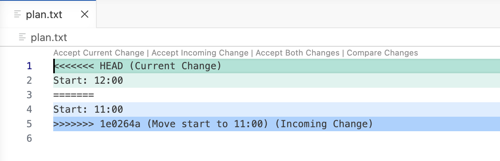
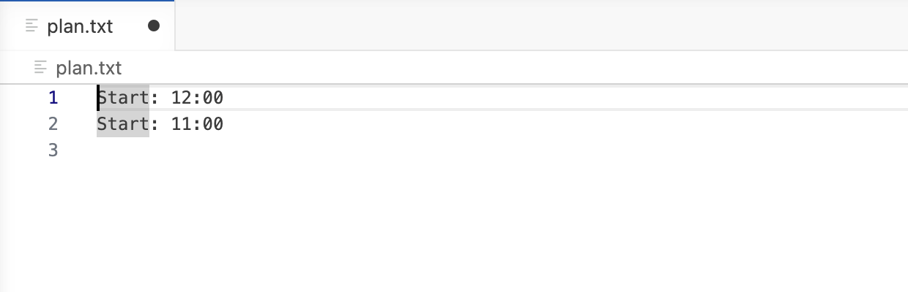
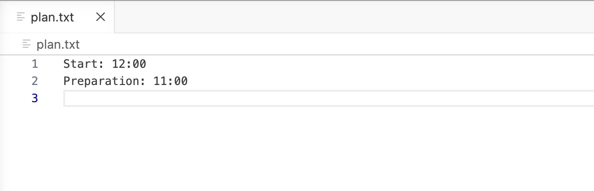

Справочник по Git и GitHub · модуль 4 · GitHub: аккаунт и связь с ним
Глава 4.5
Если ветки
разошлись
В главе разобрано, почему Git отклоняет отправку, когда в двух рабочих копиях появились разные коммиты. На локальном стенде проверены Fetch, слияние и rebase, разрешение конфликта, отмена операции и повторный Push.
- Категория
- Связь с удалённым репозиторием
- Уже знакомо
- Коммит, ветка, merge, конфликт, rebase, push / pull / fetch
- Что получится
- Объединённая история без принудительной отправки
- Время
- Около часа; Git, Python 3 и VS Code
В каждый внесли свою правку. Новая дата одного экземпляра не делает второй ненужным.
Fetch получает чужие коммиты. После этого видно, какие изменения есть только с одной стороны.
Merge сохраняет обе линии. Rebase переносит свои неопубликованные изменения поверх полученной линии.
§1Подготовить безопасный стенд
Зачем этот шаг. Получить отказ Push, не затрагивая проект на GitHub.
Две рабочие копии похожи на два экземпляра расписания у разных участников. Каждый может изменить свой экземпляр, пока другой работает. В нашем стенде work-a — ваша копия, work-b — копия второго участника. Их origin указывает на одну папку origin.git на диске. Это bare-репозиторий: в нём хранится история без рабочего каталога.
Обе копии отправляют коммиты в один bare. Git проверяет допустимость обновления ветки и при такой локальной отправке. Для опыта не нужны GitHub, токен и сеть. Проверяется включение истории без настройки входа на сервер.
- Скачайте lab.py в отдельную служебную папку, например
git45-tools. Не кладите сценарий в реальный репозиторий. - Откройте терминал в этой папке. Следующая команда создаст новую, ещё не существующую соседнюю папку
git45-lab. При совпадении имени сценарий остановится.
python3 lab.py --root ../git45-lab setuppython3 запускает Python. Файл lab.py — скачанный сценарий. Параметр --root задаёт папку стенда, действие setup создаёт bare и два клона. В Windows команда Python может называться python. Для подготовки нужен терминал. Команда Clone в VS Code не создаёт bare. Сценарий также воспроизводит две расходящиеся истории с фиксированными датами.
- В VS Code выберите File → Open Folder… и откройте только
git45-lab/work-a. В названии папки проверьтеwork-a. - До любых Git-действий проверьте путь удалённого репозитория. Во внешнем терминале перейдите в
work-aи выполните команду ниже. Конец ответа должен бытьgit45-lab/origin.git, безhttps://иgit@github.com.
git remote get-url originremote get-url origin печатает адрес, ничего не отправляя. Все дальнейшие команды Git выполняются из work-a, кроме явно помеченной проверки второй копии. Рабочие файлы перед началом чистые. На реальном проекте сначала сохраните свою работу отдельным коммитом или stash; незакоммиченные правки нельзя терять при устранении расхождения.
Что подготовлено и как повторить весь опыт автоматически
Сценарий создаёт исходные README.md и plan.txt, затем две независимые ветки: merge-demo и rebase-demo. В каждой A делает свой коммит, B — другой и отправляет его. A ещё не выполняла Fetch. В конце открыта merge-demo. Автообновление Git (git.autofetch) в проверочном профиле выключено, чтобы поймать устаревшую remote-tracking ссылку.
Для полного повтора скачайте рядом с lab.py сценарий replay.py. Он запускает те же Git-операции, проверяет содержимое файлов и код возврата. Запускайте его только в свежем стенде, не после ручного прохождения:
python3 lab.py --root ../git45-repeat setup
python3 replay.py --root ../git45-repeatreplay.py проверяет, что origin — bare внутри выбранного стенда. Воспроизведение использует команды вместо кнопок только для автоматической проверки. Журнал подготовки, журнал опыта и состояния Git сохранены с реального запуска. Пути в журналах относятся к авторскому временному стенду. Имена, даты и хеши фиксированы для Git 2.51.1; другой алгоритм слияния или версия Git могут изменить итоговый хеш.
Теперь проследим, как в двух копиях появились разные коммиты.
§2Откуда берётся расхождение
Зачем этот шаг. Отличить изменение общей истории от изменения сведений о ней на своём компьютере.
Оба экземпляра расписания сначала совпадают. Участник A добавляет заметку об оборудовании, B — номер кабинета. В Git это два разных потомка одного исходного коммита. Сценарий подготовки уже выполнил эти действия; повторно коммитить их не нужно.
История подготовки merge-demo: после каждого коммита
После исходного коммита и настройки отслеживания обе ссылки совпадают. HEAD указывает на текущую локальную ветку.
merge-demo → ed8f2b4origin/merge-demo → ed8f2b4→ merge-demo → ed8f2b4merge-demo → ed8f2b4Стрелка от коммита ведёт к его родителю. «Копия» — локальная remote-tracking ссылка; это не прямое чтение bare. Показана только ветка этого опыта.
Затем A добавила notes.txt со строкой Bring laptop. Коммит существует только у A; ссылка origin/merge-demo пока на исходном плане.
merge-demo → d6d9d74origin/merge-demo → ed8f2b4→ merge-demo → d6d9d74merge-demo → ed8f2b4Стрелка от коммита ведёт к его родителю. «Копия» — локальная remote-tracking ссылка; это не прямое чтение bare. Показана только ветка этого опыта.
Коммит B c6438d4 добавляет contact.txt со строкой Room 204. После его Push bare уже указывает на B, но в A пока отсутствуют этот коммит и новое положение ветки.
Сравним положение ссылок после отправки из B. Правый коммит на схеме уже есть в bare; в локальной истории A до Fetch его ещё нет.
merge-demo → d6d9d74origin/merge-demo → ed8f2b4 (устарела)→ merge-demo → d6d9d74merge-demo → c6438d4Стрелка от коммита ведёт к его родителю. «Копия» — локальная remote-tracking ссылка; это не прямое чтение bare. Показана только ветка этого опыта.
merge-demo — редактируемая локальная ветка. origin/merge-demo — локальная удалённая отслеживаемая ветка (remote-tracking branch), запись последнего известного положения ветки на origin. Одинаковое имя после косой черты не означает, что эта запись обновляется в реальном времени.
До Fetch команда git status -sb сообщает [ahead 1]: у A один коммит сверх известной ссылки. Фактическое расхождение с bare уже существует. Проверим, что произойдёт при отправке.
§3Почему Push отклонён
Зачем этот шаг. Установить причину отказа до выбора способа включения чужих коммитов.
На общей странице расписания уже записан кабинет из экземпляра B. Замена страницы только экземпляром A убрала бы запись B. Для обычного Push текущая удалённая вершина должна входить в историю отправляемой вершины. Тогда удалённую ссылку можно передвинуть вперёд с сохранением всех прежних коммитов. Это обновление fast-forward.
- В панели Source Control откройте меню … → Pull, Push → Push. Если расположение меню отличается, откройте палитру команд через F1 и найдите Git: Push. Это одна операция — отправка текущей ветки.
- При отказе не соглашайтесь на автоматическую синхронизацию и не выбирайте Push (Force). Для разбора нам нужен отдельный Fetch.
Операции соответствует git push origin merge-demo. Реальный первый запуск дал следующий фрагмент:
! [rejected] merge-demo -> merge-demo (fetch first)
error: failed to push some refsЭто отказ от non-fast-forward обновления: c6438d4 не является предком d6d9d74. В нашем прогоне Git напечатал fetch first, потому что чужого коммита ещё не было в A. После Fetch при той же попытке формулировка может быть non-fast-forward. Отказ не изменил коммиты, локальную ветку или bare: действует предыдущая схема.
Почему не нажимаем Sync и не используем force push
Sync объединяет получение/включение изменений и отправку. Способ включения зависит от настроек, в том числе git.rebaseWhenSync. Здесь мы сначала смотрим историю и сами выбираем merge либо rebase.
Принудительная отправка может переставить удалённую ветку так, что коммиты B перестанут быть достижимы из неё. Это не включение чужой работы. В обоих вариантах достаточно обычного Push: переносим только свои неопубликованные коммиты.
Чтобы выбрать способ включения, сначала получим актуальную историю.
§4Получить сведения и прочитать граф
Зачем этот шаг. Увидеть обе линии до изменения своих файлов.
При сверке двух экземпляров можно сначала прочитать чужие правки, не вписывая их в свой экземпляр. Fetch получает объекты Git и обновляет remote-tracking ссылки. Обычный Fetch в нашем опыте не переставляет текущую локальную ветку и не меняет рабочие файлы.
- Через F1 выполните Git: Fetch. Соответствующая команда —
git fetch origin. - В панели Source Control откройте представление Source Control Graph. Найдите подписи
merge-demoиorigin/merge-demo. В журнале есть обе ветки стенда; для этого шага рассматривайте толькоmerge-demo.
После Fetch ссылка origin/merge-demo передвинулась с ed8f2b4 на c6438d4. HEAD и локальная ветка остались на d6d9d74. Вот обновлённая схема.
merge-demo → d6d9d74origin/merge-demo → c6438d4→ merge-demo → d6d9d74merge-demo → c6438d4Стрелка от коммита ведёт к его родителю. «Копия» — локальная remote-tracking ссылка; это не прямое чтение bare. Показана только ветка этого опыта.
Общая точка снизу — ed8f2b4. Слева выше неё один коммит только у A, справа — один только в полученной истории. Это diverged: локальная ветка одновременно ahead 1 (на один уникальный коммит впереди) и behind 1 (на один уникальный коммит позади). Сравнение считает коммиты, до которых можно дойти по связям с родителями. Количество изменённых строк и даты создания на этот счёт не влияют.
Проверка графа командами, если его представление скрыто
Эти команды только читают историю. Команда log строит граф двух названных вершин. Параметр --decorate добавляет подписи ссылок. Команда rev-list считает уникальные коммиты с каждой стороны .... Слева указан HEAD, справа — upstream @{u}, отслеживаемая ветка для сравнения. Поэтому порядок чисел — ahead, затем behind.
git log --graph --oneline --decorate HEAD origin/merge-demo
git rev-list --left-right --count HEAD...@{u}
1 1Если ветка не имеет upstream, выражение @{u} не сработает. В нашем стенде связь локальной ветки с upstream уже настроена. Для явного сравнения можно заменить его на origin/merge-demo.
По-простому: что обновил Fetch
У вас есть свой экземпляр плана и записка «какой экземпляр сейчас общий». Fetch приносит новую копию общей истории и исправляет записку. Ваш экземпляр пока не переделан. Что есть что: свой экземпляр — merge-demo, записка — origin/merge-demo, общий экземпляр — ветка внутри bare. В отличие от бумажной записки Git также загружает сами недостающие коммиты.
Обе правки нужны. Сначала включим их способом, сохраняющим исходные коммиты.
§5Включить изменения через merge
Зачем этот шаг. Объединить две уже существующие линии, сохранив их хеши.
К двум экземплярам плана можно составить согласованный третий, в котором учтены оба. Merge в разошедшейся истории создаёт коммит с двумя родителями. В нашем случае правки затронули разные файлы, поэтому конфликт не возник.
- Проверьте текущую ветку:
merge-demo. - Через F1 → Git: Merge… выберите
origin/merge-demo. Выборmerge-demoозначал бы слияние ветки с самой собой. - Если откроется сообщение коммита, сохраните сообщение слияния и подтвердите завершение. Проверьте, что появился новый коммит и нет незавершённой операции.
Эквивалент проверочного запуска — git merge --no-edit origin/merge-demo: --no-edit принимает стандартное сообщение без запуска редактора. Результат — Merge made by the 'ort' strategy. Новая вершина имеет два родителя:
merge-demo → a1597daorigin/merge-demo → c6438d4→ merge-demo → a1597damerge-demo → c6438d4Стрелка от коммита ведёт к его родителю. «Копия» — локальная remote-tracking ссылка; это не прямое чтение bare. Показана только ветка этого опыта.
От a1597da идут две стрелки: к своей линии и к полученной. Исходные хеши d6d9d74 и c6438d4 сохранились. В рабочей папке теперь есть и notes.txt, и contact.txt. Remote-tracking ссылка ещё на B: операция merge ничего не отправляет.
По-простому: почему ahead теперь равен двум
От полученной вершины B в локальной истории добавились два достижимых коммита: прежний локальный d6d9d74 и само слияние a1597da. Поэтому результат сравнения — 2 / 0, хотя после Fetch была выполнена одна команда merge. Что есть что: два исходных экземпляра — родители, согласованный экземпляр — коммит слияния. Git хранит ссылки на родителей; слияние не склеивает два старых коммита в один.
Граф объединён, но перед отправкой нужно проверить содержимое результата.
§6Проверить и отправить
Зачем этот шаг. Убедиться, что обе правки сохранились и отправляется законченная история.
После согласования расписания проверяют содержание записей. В Git успешное слияние тоже не заменяет проверку файлов.
- Откройте в проводнике VS Code
notes.txtиcontact.txt: ожидаются строкиBring laptopиRoom 204. Source Control должен быть без незакоммиченных файлов. - У проекта с кодом запустите его тесты или сборку. Наш стенд содержит только текст; здесь проверяется содержимое обоих файлов и отсутствие ошибок пробелов командой
git diff --check. - Повторите Git: Push. Затем выполните Git: Fetch и снова сравните ветки.
В проверочном запуске git push origin merge-demo ответил c6438d4..a1597da merge-demo → merge-demo. Две точки обозначают обычное продвижение, без принудительной замены. Теперь обе ссылки на одном коммите.
merge-demo → a1597daorigin/merge-demo → a1597da→ merge-demo → a1597damerge-demo → a1597daСтрелка от коммита ведёт к его родителю. «Копия» — локальная remote-tracking ссылка; это не прямое чтение bare. Показана только ветка этого опыта.
HEAD по-прежнему указывает на локальную ветку; bare и remote-tracking ссылка совпали с ней. Проверка git rev-list --left-right --count HEAD...@{u} дала 0 / 0, а git status --short — пустой вывод. Это совпадение с последним известным состоянием: другой участник может отправить новые коммиты после проверки.
Если между Fetch и Push успел отправить кто-то ещё
Новый отказ означает, что bare снова изменился. Повторите Fetch, посмотрите новые коммиты и включите их согласованным способом. Не используйте force push для обхода этой проверки.
Слияние завершено. Теперь сравним его с переносом неопубликованной локальной работы в независимом опыте.
§7Независимый вариант: rebase
Зачем этот шаг. Получить линейную историю, не переписывая уже опубликованные чужие коммиты.
Свою ещё не переданную правку расписания можно заново внести в уже обновлённый общий экземпляр. Так работает rebase: Git повторно применяет изменения локальных коммитов поверх выбранной базы. Для опубликованной общей ветки такой перенос без согласования не подходит.
- В левом нижнем углу VS Code нажмите имя ветки и переключитесь на
rebase-demo. Рабочее дерево перед переключением должно быть чистым. - Выполните Git: Fetch и рассмотрите
rebase-demoсorigin/rebase-demo. Это другая ветка от исходного плана; коммиты опыта merge в неё не входят.
Как подготовлена независимая ветка
От общего исходного коммита A изменила время с 10:00 на 11:00 и получила 1e0264a. До отправки B состояние было таким:
rebase-demo → 1e0264aorigin/rebase-demo → ed8f2b4→ rebase-demo → 1e0264arebase-demo → ed8f2b4Стрелка от коммита ведёт к его родителю. «Копия» — локальная remote-tracking ссылка; это не прямое чтение bare. Показана только ветка этого опыта.
B независимо от A изменила ту же строку на 12:00 и получила a36fc4c. После Push из B bare сдвинулся на этот коммит, а remote-tracking ссылка A до Fetch оставалась на ed8f2b4. Общий предок у обеих веток тот же исходный коммит; слияние из предыдущего опыта к этой линии не относится.
После получения сведений обе стороны содержат по одному своему коммиту. Изменения затронули одну и ту же строку plan.txt.
rebase-demo → 1e0264aorigin/rebase-demo → a36fc4c→ rebase-demo → 1e0264arebase-demo → a36fc4cСтрелка от коммита ведёт к его родителю. «Копия» — локальная remote-tracking ссылка; это не прямое чтение bare. Показана только ветка этого опыта.
- Оставаясь на
rebase-demo, выполните F1 → Git: Rebase Branch… и выберитеorigin/rebase-demoкак базу. Не выбирайте локальнуюmerge-demo. - При остановке на конфликте не запускайте новый merge или pull. Откройте
plan.txtи разрешите текущую операцию либо отмените её.
В проверочном запуске использована команда git rebase origin/rebase-demo. Она остановилась с сообщением could not apply 1e0264a... Move start to 11:00. Разберём эту остановку и безопасный выход из неё.
§8Конфликт, продолжение и отмена
Зачем этот шаг. Сохранить нужный смысл обеих правок и не потерять исходное состояние при отмене.
В одном расписании нельзя автоматически выбрать между двумя разными часами начала. При rebase Git уже переключился на полученную базу и пытается применить локальную правку к ней. Поэтому в нашем конфликте Current — время из B, а Incoming — повторно применяемая локальная правка A. Слова «текущий» и «входящий» здесь нельзя заменять правилом «мой» и «чужой».
Откройте plan.txt в обычном редакторе VS Code. На настоящем кадре верхняя часть содержит 12:00 из базы, нижняя — 11:00 из переносимого коммита. Над блоком расположены команды выбора.

Во время этой остановки файловый конфликт ещё не стал новым коммитом. HEAD временно отделён от ветки и находится на базе; сама ветка сохраняет прежнюю вершину до завершения rebase.
rebase-demo → 1e0264aorigin/rebase-demo → a36fc4c→ a36fc4c (отделён)rebase-demo → a36fc4cСтрелка от коммита ведёт к его родителю. «Копия» — локальная remote-tracking ссылка; это не прямое чтение bare. Показана только ветка этого опыта.
Две стрелки к общему предку остались прежними; новый коммит ещё не создан. git status -sb выводит HEAD (no branch) и UU plan.txt. Это ожидаемая остановка операции. Команда с @{u} в этот момент не подходит: отделённый HEAD не имеет upstream.
- Для сравнения нажмите Accept Both Changes. На кадре ниже — фактический результат: обе строки сохранены одна за другой.

Для опыта принято решение: занятие начинается в 12:00, подготовка — в 11:00. Исправьте вторую строку на Preparation: 11:00 и сохраните файл. Удаление маркеров конфликта само по себе не гарантирует правильный текст.

- В Source Control перенесите
plan.txtв индекс кнопкой + (Stage Changes). Это соответствуетgit add plan.txt: вы отмечаете текущий текст как разрешение конфликта. - Продолжите
git rebase --continue. Для этого шага приведена явная команда: она продолжает уже начатый rebase. Если откроется редактор сообщения, сохраните сообщение переносимого коммита и закройте файл сообщения.
Почему в проверочном прогоне команды выполнялись во внешнем терминале
Изолированный профиль VS Code открыл стенд в Restricted Mode; панель Source Control сообщила, что зарегистрированные провайдеры там не работают. Среда запретила менять доверие. Поэтому выполнение Git-команд проверено во внешнем терминале, а выбор текста — кнопкой редактора. Отключать защиту ради повтора не требуется: если ваша среда тоже запрещает доверие, используйте команды в отдельном стенде и считайте Git-кнопки непроверенными.
git add plan.txt
git diff --cached --check
git rebase --continueadd записывает разрешённый файл в индекс. diff --cached --check проверяет пробельные ошибки в подготовленном содержимом. Смысл расписания нужно проверить по тексту. rebase --continue продолжает перенос. До этой последней команды коммиты и ссылки всё ещё соответствуют схеме остановки; поменялся только индекс.
Вместо продолжения: отмена rebase и отмена merge
Если решение не согласовано, отмените текущую операцию. Для rebase есть Git: Abort Rebase, для merge — Git: Abort Merge. Однозначные команды ниже относятся к разным операциям; выполняется только подходящая.
git rebase --abort
# либо, только во время merge:
git merge --abortВ нашем опыте обе отмены проверены. На той же независимой ветке сначала выполнены git merge --no-edit origin/rebase-demo → конфликт → git merge --abort. Затем rebase доведён до конфликта и отменён через git rebase --abort. Каждый раз вернулись ветка 1e0264a, HEAD на ней и чистый файл Start: 11:00. Полученная ссылка осталась на B:
rebase-demo → 1e0264aorigin/rebase-demo → a36fc4c→ rebase-demo → 1e0264arebase-demo → a36fc4cСтрелка от коммита ведёт к его родителю. «Копия» — локальная remote-tracking ссылка; это не прямое чтение bare. Показана только ветка этого опыта.
При конфликте merge HEAD остаётся на своей ветке; во время rebase он отделяется. Поэтому команда продолжения тоже отличается: после разрешения merge — индекс и обычный коммит слияния; после разрешения rebase — индекс и rebase --continue. Не подменяйте продолжение rebase командой rebase --skip: skip исключает текущий переносимый коммит.
Отмена возвращает состояние до операции. Незакоммиченные правки, внесённые уже во время разрешения конфликта, не следует считать сохранёнными. В стенде перед началом операций дерево было чистым. В реальной работе сохраните нужный текст отдельно до отмены. После проверки отмены опыт заново запущен из того же расхождения и завершён.
После продолжения появится новая вершина. Сравним её с прежним локальным коммитом.
§9Новые хеши и повторная отправка
Зачем этот шаг. Проверить, что перенос не исключил удалённый коммит и не требует force push.
Правка, заново внесённая в другой экземпляр расписания, имеет другую основу. У Git родитель входит в данные коммита, поэтому после rebase меняется идентификатор даже при одинаковом сообщении. В нашем опыте также изменился текст разрешения конфликта.
Проверенный ответ — Successfully rebased and updated refs/heads/rebase-demo. Ветка теперь указывает на 0a140dd. Родитель нового коммита — a36fc4c; у старого локального коммита родителем был ed8f2b4.
rebase-demo → 0a140ddorigin/rebase-demo → a36fc4c→ rebase-demo → 0a140ddrebase-demo → a36fc4c1e0264a — вне новой линии веткиСтрелка от коммита ведёт к его родителю. «Копия» — локальная remote-tracking ссылка; это не прямое чтение bare. Показана только ветка этого опыта.
Новая линия последовательно включает общий план, удалённую правку и согласованную локальную правку. Старый 1e0264a больше не входит в эту ветку; немедленного удаления объекта rebase не обещает. Удалённый a36fc4c сохранил хеш и теперь является предком нашей вершины. Поэтому обычный Push будет fast-forward.
- Проверьте файл:
Start: 12:00иPreparation: 11:00. Убедитесь, что в Source Control нет незакоммиченных изменений и rebase завершён. - Сверьте историю: только один локальный коммит поверх
origin/rebase-demo, без лишнего merge-коммита. - Выполните Git: Push, затем Git: Fetch. Эквиваленты —
git push origin rebase-demoиgit fetch origin.
В прогоне обычная отправка ответила a36fc4c..0a140dd rebase-demo → rebase-demo. После неё положение ссылок такое:
rebase-demo → 0a140ddorigin/rebase-demo → 0a140dd→ rebase-demo → 0a140ddrebase-demo → 0a140ddСтрелка от коммита ведёт к его родителю. «Копия» — локальная remote-tracking ссылка; это не прямое чтение bare. Показана только ветка этого опыта.
Получены чистое дерево и сравнение 0 / 0. Чужая опубликованная история сохранена. Реальный репозиторий в опыте не изменялся. Опубликован только новый потомок в одноразовый локальный bare.
Где увидеть чистое behind: вторая рабочая копия
Во второй копии после Fetch ветка rebase-demo всё ещё на a36fc4c, а её origin/rebase-demo уже на 0a140dd. Это проверенное [behind 1]: своих уникальных коммитов нет, один полученный коммит ещё не включён.
rebase-demo → a36fc4corigin/rebase-demo → 0a140dd→ rebase-demo → a36fc4crebase-demo → 0a140ddСтрелка от коммита ведёт к его родителю. «Копия» — локальная remote-tracking ссылка; это не прямое чтение bare. Показана только ветка этого опыта.
Здесь достаточно fast-forward. Из work-b проверено git merge --ff-only origin/rebase-demo: --ff-only запрещает создание слияния и допускает только передвижение ссылки вперёд. Получен ответ Updating a36fc4c..0a140dd и Fast-forward.
rebase-demo → 0a140ddorigin/rebase-demo → 0a140dd→ rebase-demo → 0a140ddrebase-demo → 0a140ddСтрелка от коммита ведёт к его родителю. «Копия» — локальная remote-tracking ссылка; это не прямое чтение bare. Показана только ветка этого опыта.
Ahead означает только свои уникальные коммиты, behind — только недостающие полученные. При diverged есть и те, и другие. Эти состояния определяются относительно выбранной remote-tracking ссылки.
Остаётся закрепить порядок действий и ошибки, которые нарушают его.
§10Частые ошибки
| Что произошло | Что проверить и сделать |
|---|---|
| «Ahead 1 — значит можно отправлять» | Сведения могли устареть. Выполнить Fetch и проверить историю до включения изменений. |
| Несколько повторов Push дают один отказ | Push не включает чужие коммиты. Fetch → граф → merge либо rebase → проверка → Push. |
| После Fetch файл не изменился | Это ожидаемо: текущая локальная ветка не перемещена. Сначала выбрать и выполнить включение истории. |
| Выбрана локальная ветка с тем же именем | В Merge/Rebase нужна полученная origin/имя. Слияние с самим собой обычно ничего не меняет. |
| При rebase выбрано Incoming, потому что «это чужое» | В этом опыте Incoming — переносимый локальный коммит. Проверять принадлежность версии по строкам и хешу переносимого коммита. |
| После Accept Both Changes сразу выполнено продолжение | Проверить смысл файла: две строки Start могут противоречить друг другу. Только после правки — индекс и продолжение. |
| Начат новый Pull во время конфликта | git status покажет незавершённую операцию. Закончить или отменить эту операцию. |
| После rebase опубликованной ветки требуется force | Остановиться: этот случай выходит за границы опыта. Согласовать восстановление с командой, не перезаписывать общий remote. |
| Source Control недоступен в Restricted Mode | Соблюдать правила среды. Не отключать защиту в обход запрета; использовать разрешённый одноразовый стенд и отметить непроверенные кнопки. |
Теперь те же ситуации можно разобрать без подсказки из последовательности действий.
§11Проверьте себя
Почему перед первым Push A видела ahead 1, хотя bare уже содержал другой коммит?
Сравнение шло с устаревшей локальной ссылкой origin/merge-demo на ed8f2b4. После Fetch ссылка перешла на c6438d4, и сравнение дало 1 / 1.
Что запрещает non-fast-forward отказ в этом опыте?
Передвинуть удалённую ветку с c6438d4 на d6d9d74, чья история не содержит c6438d4. Обычный Push требует включить текущую удалённую вершину в отправляемую историю.
Почему после merge ahead 2, хотя выполнена одна команда?
В локальной истории сверх c6438d4 достижимы два коммита: локальный d6d9d74 и новый коммит слияния a1597da.
Почему rebase изменил хеш, но не потребовал force push?
Пересоздан только неопубликованный локальный коммит. У нового коммита родитель — опубликованный a36fc4c. Удалённую ветку можно продвинуть к потомку обычным Push.
Куда указывает HEAD во время конфликта rebase и после его отмены?
При остановке HEAD отделён и находится на базе a36fc4c; ветка ещё на 1e0264a. После rebase --abort HEAD снова на ветке rebase-demo с вершиной 1e0264a.
Доказывает ли 0 / 0, что завтра никто не получит отказ Push?
Нет. Это совпадение локальной ветки с последними полученными сведениями. Новая отправка другого участника может снова изменить bare после проверки.
Для самостоятельного прохождения нужен новый стенд: завершённые ветки этого прогона уже совпадают с origin.
§12Самостоятельная работа
Создайте через lab.py setup новую папку git45-practice. Не используйте завершённую папку и не удаляйте реальный проект ради повтора.
- На
merge-demoполучите отказ Push. Запишите хеш HEAD и положениеorigin/merge-demoдо Fetch и после него. - Нарисуйте граф с хешами, HEAD и двумя ссылками. Укажите ahead и behind. Завершите включение через merge, проверьте оба файла и отправьте.
- Переключитесь на независимую
rebase-demo. Получите конфликт rebase, запишите положение HEAD и ветки. Сначала проверьте отмену, затем повторите перенос. - Разрешите конфликт по условию: начало в 12:00, подготовка в 11:00. Проверьте файл и индекс, продолжите rebase, затем выполните обычный Push.
- Сдайте две итоговые схемы, сравнение старого и нового локального хеша после rebase и результат
0 / 0после последнего Fetch. Кадры должны относиться к вашему стенду.
Критерии самопроверки
После Fetch в первом опыте — d6d9d74 против c6438d4, 1 / 1. После merge — два родителя; оба файла сохранены. После rebase — одна линия через a36fc4c, старый локальный коммит заменён новым, файл содержит обе согласованные строки. Оба Push обычные, remote — локальный bare. В ручном опыте новые хеши merge и rebase могут отличаться от книги из-за текущего времени коммита; фиксированные хеши итогов воспроизводит replay.py.
Для работы с реальным проектом достаточно следующей короткой последовательности.
§13Шпаргалка
Git: Fetchgit fetch originНе меняет текущую локальную ветку в этом опыте.
HEAD...@{u}ahead / behindУникальные коммиты с каждой стороны, относительно полученной ссылки.
Git: Merge… → origin/веткаgit merge origin/веткаПри расхождении создаёт коммит слияния.
Git: Rebase Branch…git rebase origin/веткаТолько неопубликованная локальная работа; хеши меняются.
исправить → сохранить → Stagegit rebase --continuegit rebase --abortПродолжение и отмена — альтернативы. Skip исключает коммит.
файлы → проверки → чистый statusGit: Push → Git: Fetch0 / 0При новом отказе снова получить историю; без force.
Итог
- Fetch отделён от изменения своей истории.
- Merge сохраняет исходные коммиты; rebase пересоздаёт свои неопубликованные.
- При разрешении конфликта проверены обе версии и согласованное содержание.
- Отмена проверена до завершения операции.
- После проверки обе стороны совпадают; демонстрация не отправлялась на GitHub.
Откуда взяты факты
- Git: fast-forward и отказ от обновления ветки.
- Git fetch: получение объектов и обновление ссылок.
- Git merge: два родителя, конфликты и abort.
- Git rebase: повторное применение, continue и abort.
- Git rev-list: left-right и count.
- VS Code: Source Control и команды Git.
- VS Code: разрешение конфликтов.
- Фактический журнал стенда — Git 2.51.1; снимки ссылок и файлов. Имена кнопок сверены с локальным пакетом встроенного расширения Git VS Code 1.138.0; это не заменяет проверку их работы в интерфейсе.